| Inicio | A Devesa |
| Fin | Cruceiro de Bustelo |
| Distancia | 5,74 Km |
| Tipo | Lineal |
| Duración | 1 h 40 min |
| Dificultade | Media |
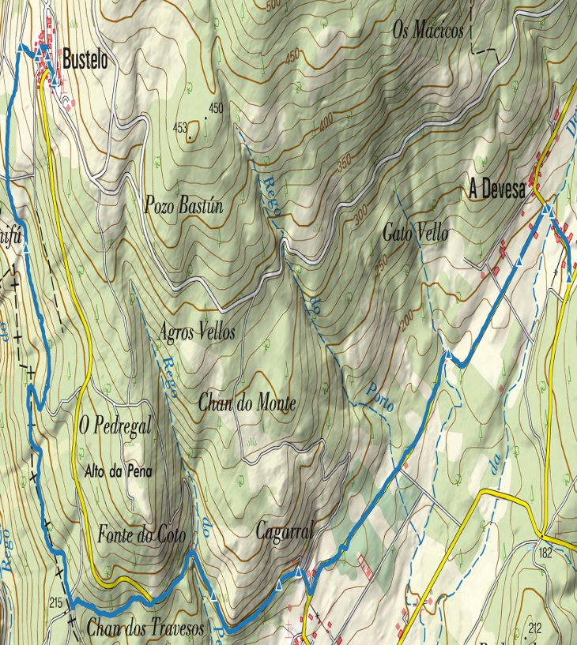
Ruta que percorre A Devesa dos Mouchos, Teaio e Bustelo do Monte, as aldeas máis afastadas do centro administrativo do Concello de Dodro.
A DEVESA

Comezamos a ruta nunha das aldeas de San Xoán de Laíño, na Devesa, na aldea de abaixo. Este topónimo significa terra defensa, vedada, do latín DEFENDERE, “defender”, excluír. Terras ou herdades cerradas, para o pasto do gando ou plantadas de arboredo para producir madeira.
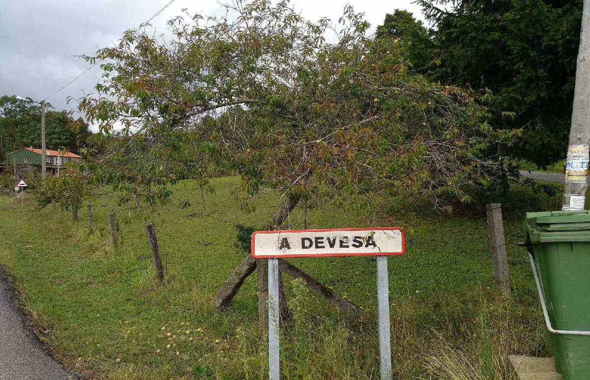
DEVESA DE ARRIBA OU DOS MOUCHOS

Imos subindo polo camiño cara a Devesa de Arriba. Desde fins da Idade Media moitas das antigas devesas pasaron a ser de propiedade real, prohibíndose nelas a corta de madeira que se reservaba para a construción dos barcos da armada e, desde o século XIX, para as travesas do ferrocarril. Os Xuíces das Devesas eran os encargados de vixiar que se cumprira a lei.
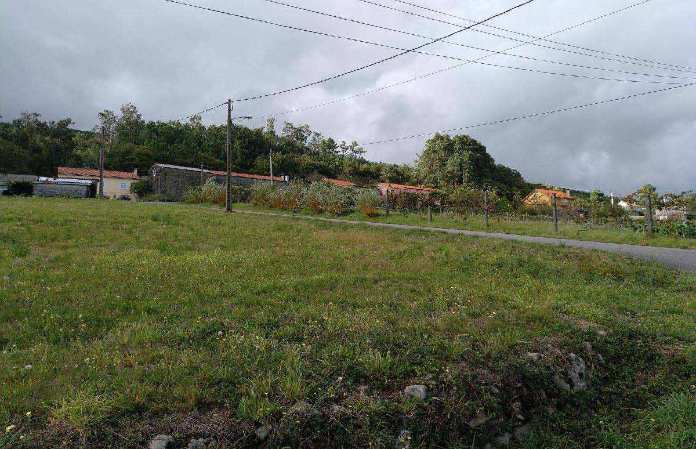
HÓRREOS NA DEVESA

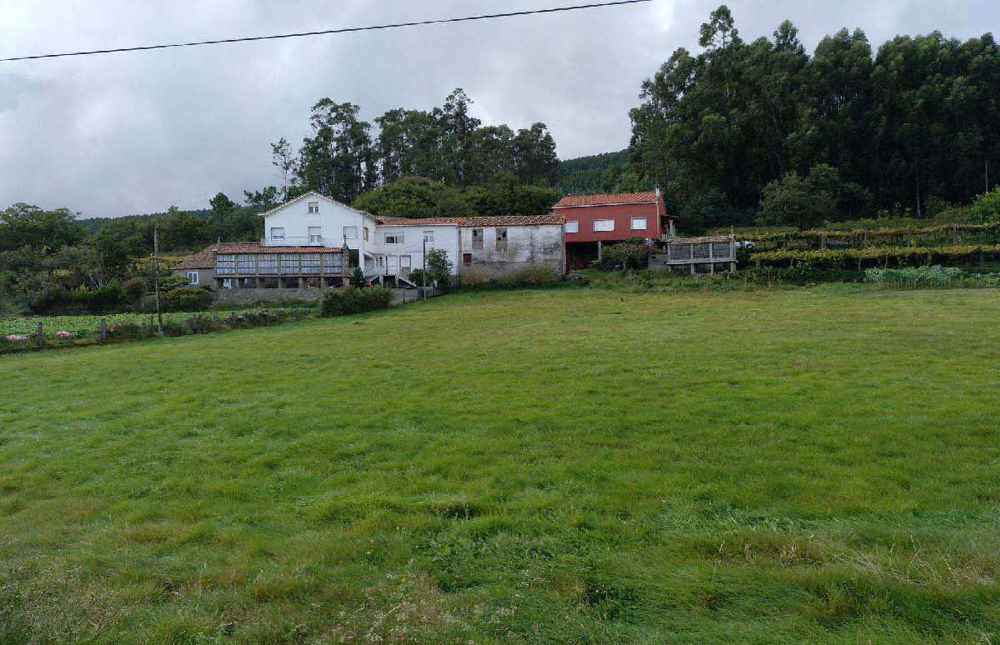
MUÍÑO DE VALENTÍN

No percurso topamos este fermoso muíño de regato ou de cubo. Dende a Idade Media, en Galicia, os muíños de auga foron un recurso moi estendido, pola abundancia de ríos e regatos. O seu mecanismo aproveita a forza da auga, transformando o cereal en fariña e esta no valioso pan, importantísimo no pasado para a alimentación. Esta construción é popularmente coñecida como Muíño de Valentín, posto que foi un veciño chamado Valentín quen a construíu, arredor do ano 1926. Desempeñou un papel fundamental na aldea pois, ademais de alimento, proporcionou electricidade a algunhas casas. Moitas están hoxe abandonadas pola transformación do agro pero agochan un rico patrimonio arquitectónico, cultural e etnográfico a conservar para as xeracións futuras. Este muíño ten muros de cachotaría pero os marcos de portas e xanelas son de cantaría e a cuberta a dúas augas, con remate de tella camba, sobre pranchas de fibrocemento. Destaca a grande altura da súa canle, construída así para darlle forza á caída da auga e facelo funcionar. Ten un gran pozo que lle proporciona auga cando o caudal do regato é pequeno
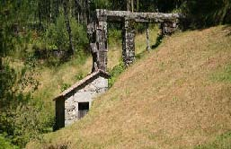
TEAIO
No medio da ruta encontrámonos con outra das aldeas do monte de San Xoán de Laíño, Teaio. Abaixo dela, xúntanse o río da Devesa co río Pedregal e os dous van dar ao río Te que desemboca na praia da Torre, ao pé do Castelo da Lúa, do trobador e almirante da mar Paio Gómez Chariño, primeiro señor de Rianxo e seguramente de Laíño. Os nomes do río e da aldea fan indicar que poderían entroncarse coa forma TA, ‘de- rreterse, fluír’ ou coa raíz TINA que daría TENA e TEA, sempre con matices relativos ás augas. No pasado nas aldeas cultivábase o té bravo, que se lle daba aos animais e tamén o tomaba a xente. Esta planta é orixinaria de México, pénsase que a introduciu en Europa o médico de Felipe II. Nalgunhas follas do topográfico cítase ao río como Río do Té. A Colección Diplomática Galicia Histórica conserva documentos do s. XII nos que se fai referencia a Sanctum Martinum de Teaio e no Libro de fábrica de San Xián de Laíño consta que aquí había unha ermida baixo a advocación de San Martiño. Cítaa o cardeal Del Hoyo en 1606. Juan Rodríguez del Padrón no remate do Seu Siervo libre de amor, despois da morte tráxica dos amantes Ardanlyer e Lyessa no castelo da Rocha Blanca de Iria, cóntanos que quedaron ceibos polas ladeiras os seus corceles “en testimonio de lo qual, oy día se fallan cauallos saluajes de aquella raça en los montes de Teayo, de Miranda y de Bujan, donde es la flor de los monteros...”
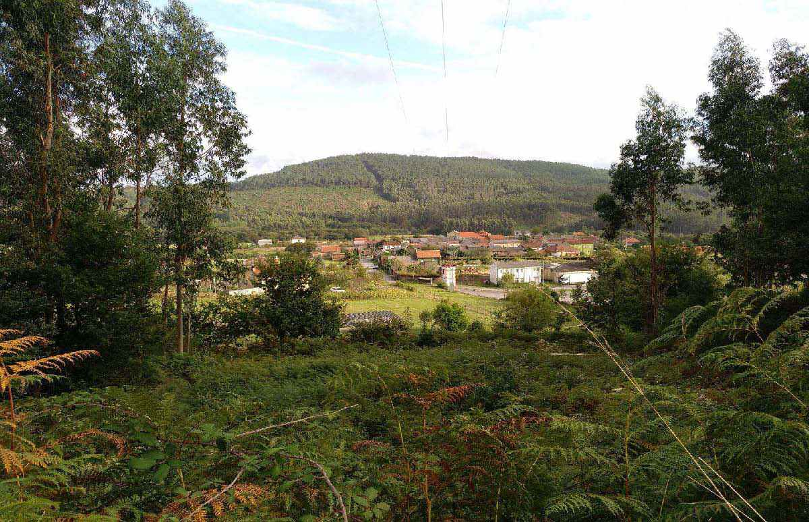
ACCESO AO POZO BASTÓN
Seguindo o percorrido, despois de ver algún muíño en estado ruinoso, alcanzamos o desvío á fermosa fervenza de Pozo Bastón
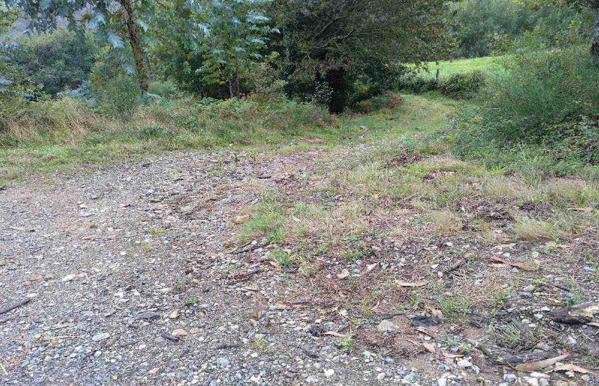
VISTAS DO VILAR
A continuación, chegando a Bustelo, divisamos a aldea do Vilar (Rianxo) situada no Pico Muralla, a 600 m sobre o nivel do mar.
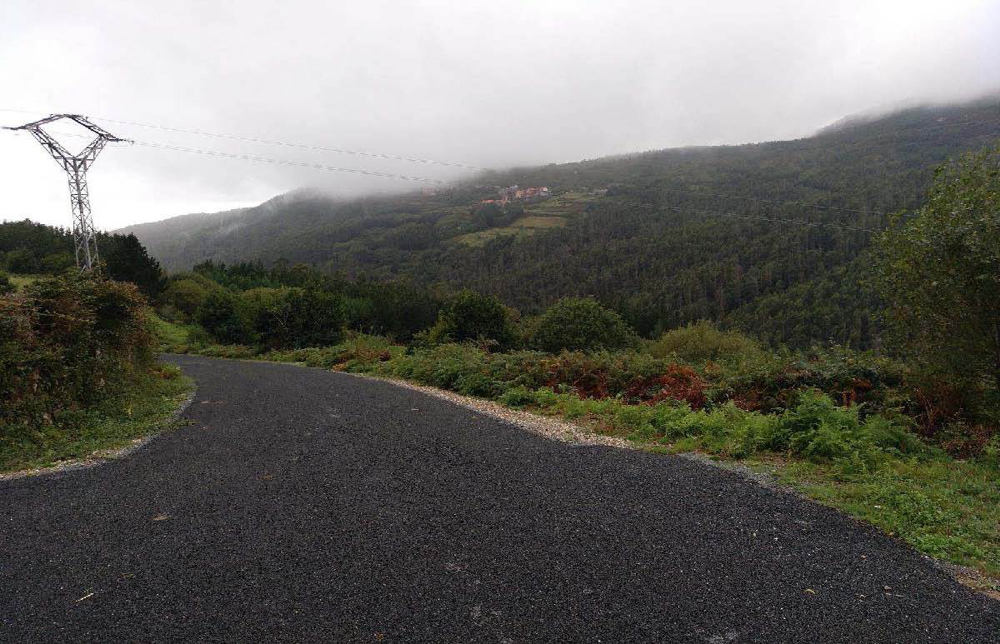
CASA TRADICIONAL EN BUSTELO
Bustelo, é diminutivo de Busto, topónimo moi característico, case exclusivo do noroeste peninsular. Procede de BOS, “boi” e de BUSTUM, “pasto para os bois”, pero ademais deste último significado pode equivaler a “rabaño de gando vacún” ou “curral para bois e vacas”. Bustelo do Monte é o nome dunha das aldeas de San Xoán de Laíño, abaixo do Treito, na caeira da serra, en fronte de Vilar e de Campelo, que xa son do Araño. Unha vella tradición oral conta que a aldea naceu no lugar arredado de Guixar ao que levaban os doentes dalgunha enfermidade contaxiosa. Quizais, coma na explicación que o arqueólogo Victor Barbeito dá para a Aldea Maldita de Abuín, en Leiro – a aldea esquecida de que fala Castelao en Cousas-, teña que ver con calquera das epidemias de peste ou de tifus de fins da Idade Media e que no s. XVI causaron moita mortandade. Este lugar é a aldea de maior altitude de Dodro, dende as fiestras dalgunhas das súas casas pódese observar a Ría de Arousa
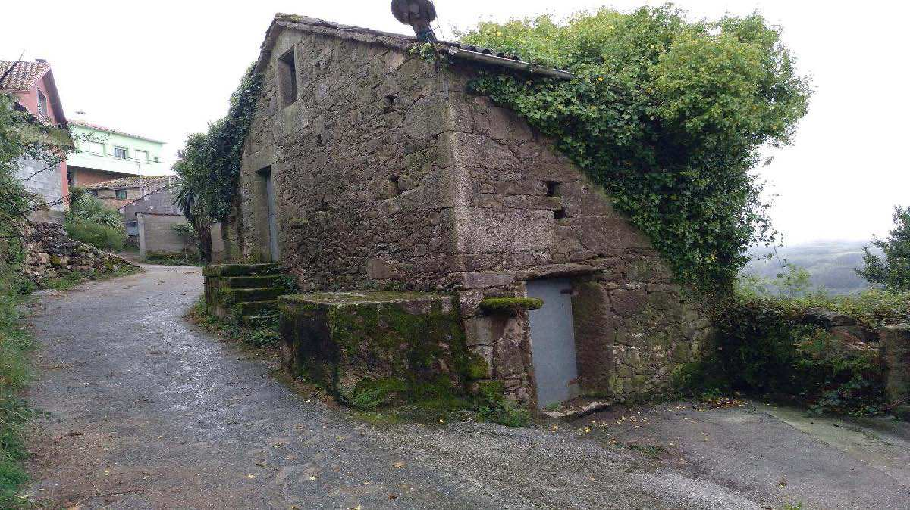
HÓRREO
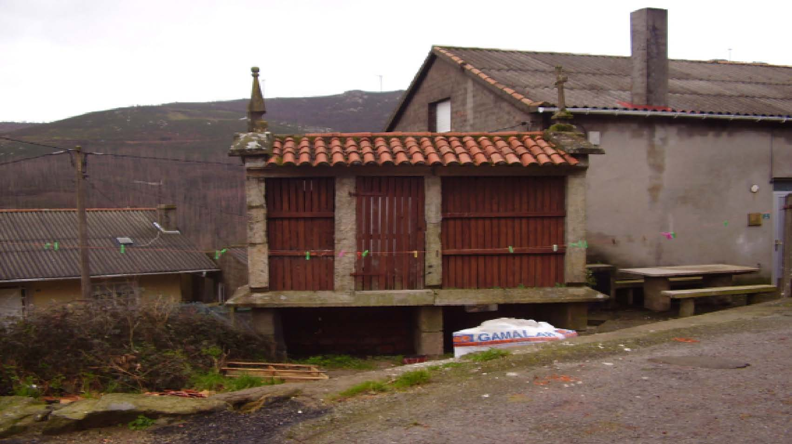
CRUCEIRO E PETO DAS ÁNIMAS
A ruta remata no cruceiro e peto das ánimas de Bustelo do Monte. Monumentos que datan do 1893. O cruceiro do tipo de crucifixo tivo un antigo uso funerario, pois ao seu arredor soterrábanse as crianzas falecidas sen bautizar. Tamén era costume que os cortexos fúnebres parasen diante. O peto non ten ningunha lenda, pero o cruceiro amósase profusamente epigrafado, nel aparecen nomeados os sete homes que prometeron, antes de partir a Cuba, construír un cruceiro na súa aldea se todo lles ía ben. Este foi realizado polo vello santeiro de Chave (Lousame), Andrés Castaño, ao que lle pagaron dezaseis onzas de ouro. Tróuxose dende Noia en dous carros de bois. Atópase sobre unha plataforma elevada executada a partir de perpiaños labrados, con tres gradas cuadrangulares sobre as que descansa unha base de molduras investidas e fuste de sección cadrada en inicio, e octogonal no resto. Capitel decorado con caras de anxos, que aloxa unha cruz de sección circular con imaxes da Virxe e Cristo.
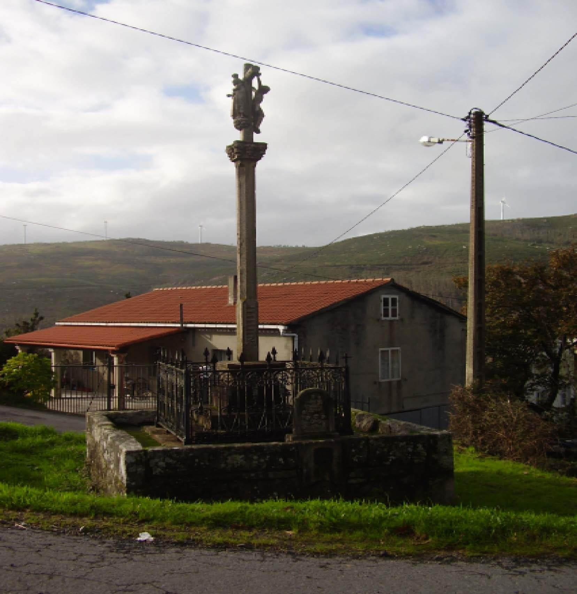 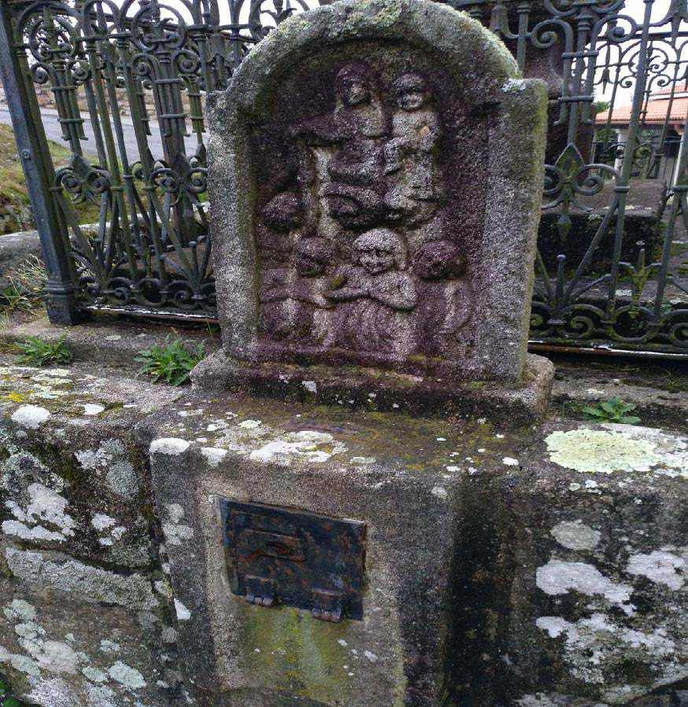